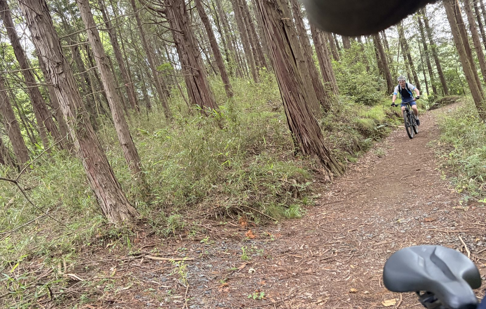
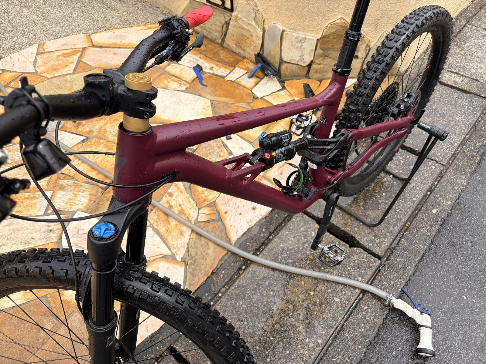

梅雨の合間にMTB。昔はロード、今は山、それでも一緒に走っている
今日はStatusでMTB。梅雨に入る前までは毎週のようにMTBへ乗っていたが、最近は天気が悪くて山へ行けていなかった。
久しぶりの山は、走り出した時点でもう楽しい。設定ワットを追う日とは違い、路面を見てラインを選び、体を動かして走る。ロードとは別の遊びが、ちゃんとここにある。

約3時間でも、疲労感はほとんどなかった
走行距離は42.26km、時間は2時間50分、獲得標高584m。平均心拍125bpm、最大156bpm、有酸素TE3.1、運動負荷97だった。パワーメーターはないので、今日は心拍と体感で管理している。
登りは軽いギアを使い、話せる範囲で淡々と進んだ。数字だけならそれなりに走っているが、終わった後の疲労感はほとんどない。概算TSSは70前後として記録する。昨日のロードに続き、強度を上げずに動けたのはちょうど良かった。
昔はロードで練習していた友人
今日一緒に走ったのは、付き合いの長い友人である。昔はお互いにロードバイクへ乗り、よく一緒に練習していた。登りや練習の話をして、今より単純に速くなることを考えていた気がする。
今、友人が持っているのはMTBだけ。乗る自転車が変われば一緒に走る機会も減り、そのまま関係まで薄くなることもあると思う。でも私たちは、ロードからMTBへ場所を変えながら今も一緒に走っている。
富士ヒルゴールド経験者に、今の話をする
友人はロードへ乗っていた頃、富士ヒルでゴールドを取っている。私がもう一度ゴールドを目指して練習を始めたことを話すと、素直に応援してくれた。
最近は外ゴルビーもSSTもできて、太平でも踏めている。調子はかなり良い。ただ、良い時期が続くほど、落ちた時に「前はできたのに」と考えてしまう怖さもある。その話まで自然にできたのは、同じ目標を経験した友人だからだと思う。
家族と子どもの話が増えた
昔は、どこを走るか、どれくらい追い込むか、誰が速いか。そんな話が中心だった。今はお互いに家庭があり、家族や子ども、仕事と生活の中でどう自転車を続けるかという話が増えた。
話す内容も、乗る自転車も変わった。それでも一緒に走る関係は続いている。自転車がきっかけで始まった関係が、生活の変化を越えて残っているのはかなりありがたい。
膝の違和感は、ほとんど気にならなかった
ここ数日気になっていた膝前側の違和感は、かなり引いてきた。今日の走行中も大きな問題はなく、終わった後もほとんど気にならない。
原因は断定できないが、高負荷が続いた疲労の影響はありそうだ。昨日のロードも今日のMTBも会話ペースにしたことで、軽く動きながら落ち着かせられた感じがある。
走った後は、最近よく洗っている
帰宅後はStatusを洗車。以前の私は、自転車を積極的に洗う方ではなかった。でも最近は、きれいになった車体を見ると気持ちがいいし、ドライブトレインを掃除すると変速もきれいに決まるので、よく洗うようになった。
特にMTBはよく汚れる。毎回こまめに洗うのは正直面倒に思う時もある。それでも泥や砂を落としてみると、やはり洗って良かったと思う。走って楽しく、洗ってすっきりするところまで含めて、最近のMTBライドになっている。

今回やってみて思ったこと
今日は練習としては軽かった。それでも久しぶりにMTBへ乗り、長い付き合いの友人と富士ヒルや家族の話ができた。数字では測れないが、満足感はかなり高い。
昔はロードで一緒に練習していた。今、友人はMTBで山を走り、私はロードで富士ヒルゴールドを目指している。目標も機材も変わったが、今日も一緒に走っている。こういう日があるから、自転車を長く続けられるのだと思う。
自分用メモ
- 距離42.26km、時間2時間50分、獲得標高584m
- 平均心拍125bpm、最大心拍156bpm
- 有酸素TE3.1、運動負荷97、概算TSS約70
- 膝前側の違和感はほとんど気にならなかった
- ライド後にStatus 140を洗車